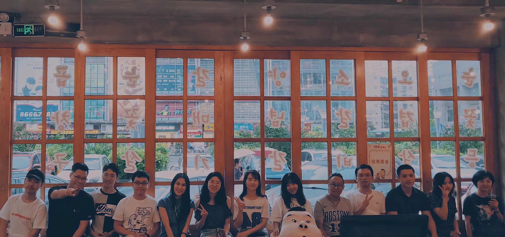
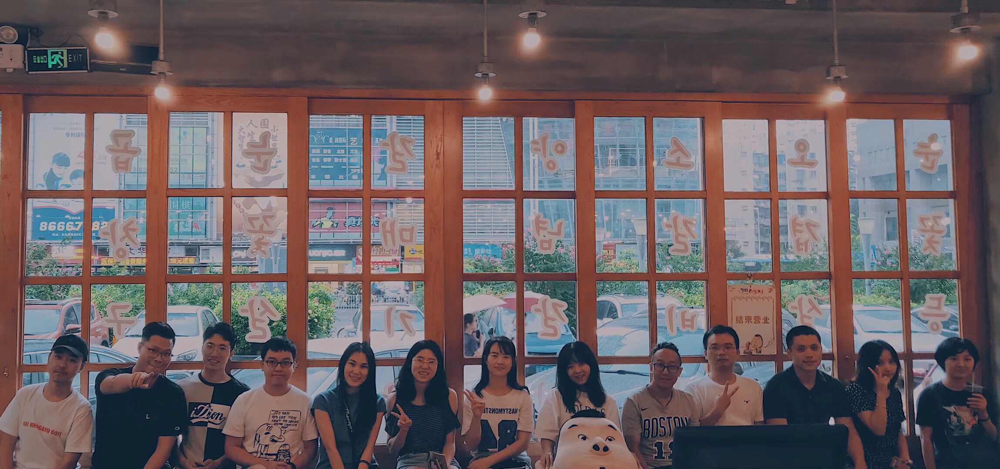

ToB and ToC Payment Design
Tencent is one of the largest Chinese Internet company with famous socical netowrking products like WeChat and QQ. Interned as a UX Designer at QQ Payment team from May to Aug, 2018, I worked both on toB and toC products to improve products' usability. My deliveries like Red Pockets Management Service has been launched on QQ Admin Platform, and an interaction innovation for QQ Red Pocket is selected as one of the launch options for the upcoming Spring Festival.
* Based on NDA, details of my work couldn't be shared here. Here are some questions I help to address through my practice.
Tencent is one of the largest Chinese Internet company with famous socical netowrking products like WeChat and QQ. Interned as a UX Designer at QQ Payment team from May to Aug, 2018, I worked both on toB and toC products to improve products' usability. My deliveries like Red Pockets Management Service has been launched on QQ Admin Platform, and an interaction innovation for QQ Red Pocket is selected as one of the launch options for the upcoming Spring Festival.
* Based on NDA, details of my work couldn't be shared here. Here are some questions I help to address through my practice.

Background
The Business Overview and the Stakeholders
At the first quarter of 2017, QQ's monthly active user accounts has exceeded 860 million. Up to now, QQ is one of the most favorite instant messaging platform among young Chinese users where QQ Payment Team takes main responsibility to support its young Chinese users' online and offline payment behaviors on QQ platform. Business partners are another important users segments who use QQ platform to promote their business and accept payment.
At the first quarter of 2017, QQ's monthly active user accounts has exceeded 860 million. Up to now, QQ is one of the most favorite instant messaging platform among young Chinese users where QQ Payment Team takes main responsibility to support its young Chinese users' online and offline payment behaviors on QQ platform. Business partners are another important users segments who use QQ platform to promote their business and accept payment.
ToB Platform
QQ Admin Platform Design
I worked on many web platform designs which include Red Pocket Management Pages; Follower Statistic Pages; QQ Admin Styleguide and QQ Mini Program Management Platform. These toB products utilize a lot of basic UI components like tables, charts, filters, status indications.
Here are some of my UX practice.
1) How to introduce users to new features when it just launches?
2) How to design an application process that can takes three to five days to approve?
3) How to utilize the basic UI components to drive for an efficient user flow?
4) How to get rid of bad frictions that caused by platform inconsistency?
Through these practice, I helped to iterate beyound the current platform using a styleguide to improve the UX Consistency with new features continuesly embeded in.
I worked on many web platform designs which include Red Pocket Management Pages; Follower Statistic Pages; QQ Admin Styleguide and QQ Mini Program Management Platform. These toB products utilize a lot of basic UI components like tables, charts, filters, status indications.
Here are some of my UX practice.
1) How to introduce users to new features when it just launches?
2) How to design an application process that can takes three to five days to approve?
3) How to utilize the basic UI components to drive for an efficient user flow?
4) How to get rid of bad frictions that caused by platform inconsistency?
Through these practice, I helped to iterate beyound the current platform using a styleguide to improve the UX Consistency with new features continuesly embeded in.
ToC Innovation
QQ Red Pocket Design
Sometimes our product manager team seem to be trapped without new ideas for our products. During my time there, I volunteered to contribute on one our product, QQ Red Pocket. Giving tangible Red Pocket used to be an important Spring Festival convention in China, its Online version in both Wechat and QQ has promote its meaning from a festival practice to broader social payment behaivors that can happen everyday.
Beyond that, serveral questions that lead the thinking of our product manager teams includes:
1) What are constraints in teenagers social payment?
2) How teenagers' social payment behaviors different than adults'?
3) What are typical Chinese teenager social payment scenarios?
4) How teenagers' Red Pocket usage different in private chat vs group chat?
Going through user interviews to prototype iteration, my product design gained a 7.5 NPS. It is finally selected as an option to launch in the upcoming Spring Festival, which gives new inspirations to our product manager teams as well as UX teams.
Sometimes our product manager team seem to be trapped without new ideas for our products. During my time there, I volunteered to contribute on one our product, QQ Red Pocket. Giving tangible Red Pocket used to be an important Spring Festival convention in China, its Online version in both Wechat and QQ has promote its meaning from a festival practice to broader social payment behaivors that can happen everyday.
Beyond that, serveral questions that lead the thinking of our product manager teams includes:
1) What are constraints in teenagers social payment?
2) How teenagers' social payment behaviors different than adults'?
3) What are typical Chinese teenager social payment scenarios?
4) How teenagers' Red Pocket usage different in private chat vs group chat?
Going through user interviews to prototype iteration, my product design gained a 7.5 NPS. It is finally selected as an option to launch in the upcoming Spring Festival, which gives new inspirations to our product manager teams as well as UX teams.
Inner Competition
Q Bill Sharing
I worked as design lead working with product manager and 9 software engineers in designing an friend bill-share app.
I worked as design lead working with product manager and 9 software engineers in designing an friend bill-share app.
What I have learned
Key Take Aways
Go beyond demands, insight matters.While being the most junior designer in the team, I gradually grow from "swallow" new demands from product manager to be able to "digest" them and "produce" insights. Usage context, logically assumptions based on user goals and competitor analysis are very great "digest" tools to keep a sharp UX mind while product manager's deadlines are approaching.
Keep eyes sharp, critique professionally.Tencent has a wonderful reflection culture where technically "reflect everything", including individuals' work, hot trend, interesting buzzwords, funny apps, stickers and even hairstyle! How much depth they probed into common or detailed phenomenons and tell stories are inspiring. No one can be bored in hearing, talking and pioneering with them.
Love your users. While social payment is being a very competitve field, our team have to delve deep into our user persona and learn what their behavior model aided with data. While focusing on interface design, being involved in user context research, generate insights and support new app research work as side projects brought me to higher level of product location.

Go beyond demands, insight matters.While being the most junior designer in the team, I gradually grow from "swallow" new demands from product manager to be able to "digest" them and "produce" insights. Usage context, logically assumptions based on user goals and competitor analysis are very great "digest" tools to keep a sharp UX mind while product manager's deadlines are approaching.
Keep eyes sharp, critique professionally.Tencent has a wonderful reflection culture where technically "reflect everything", including individuals' work, hot trend, interesting buzzwords, funny apps, stickers and even hairstyle! How much depth they probed into common or detailed phenomenons and tell stories are inspiring. No one can be bored in hearing, talking and pioneering with them.
Love your users. While social payment is being a very competitve field, our team have to delve deep into our user persona and learn what their behavior model aided with data. While focusing on interface design, being involved in user context research, generate insights and support new app research work as side projects brought me to higher level of product location.
